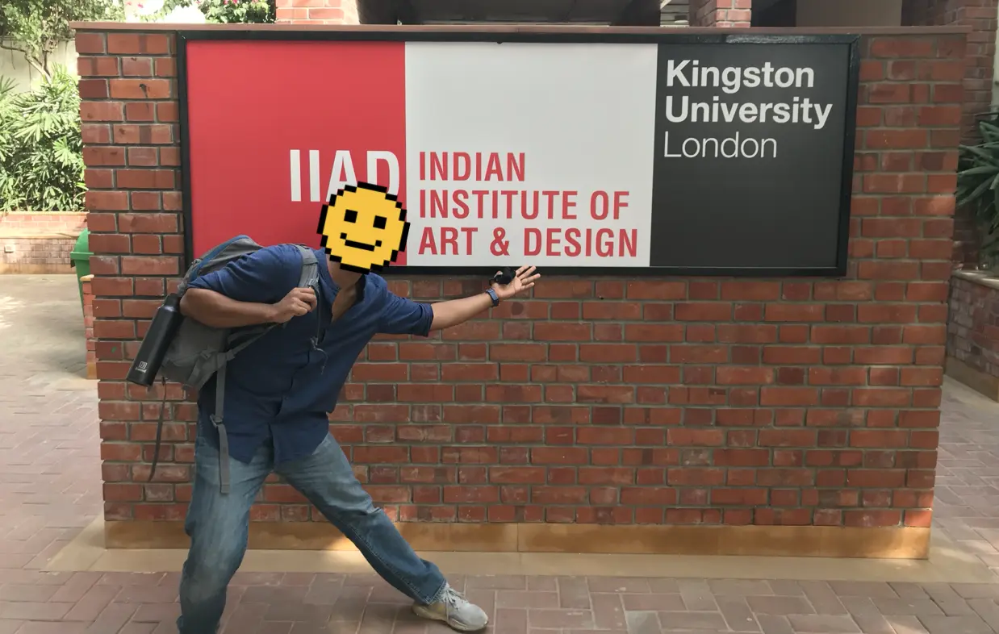
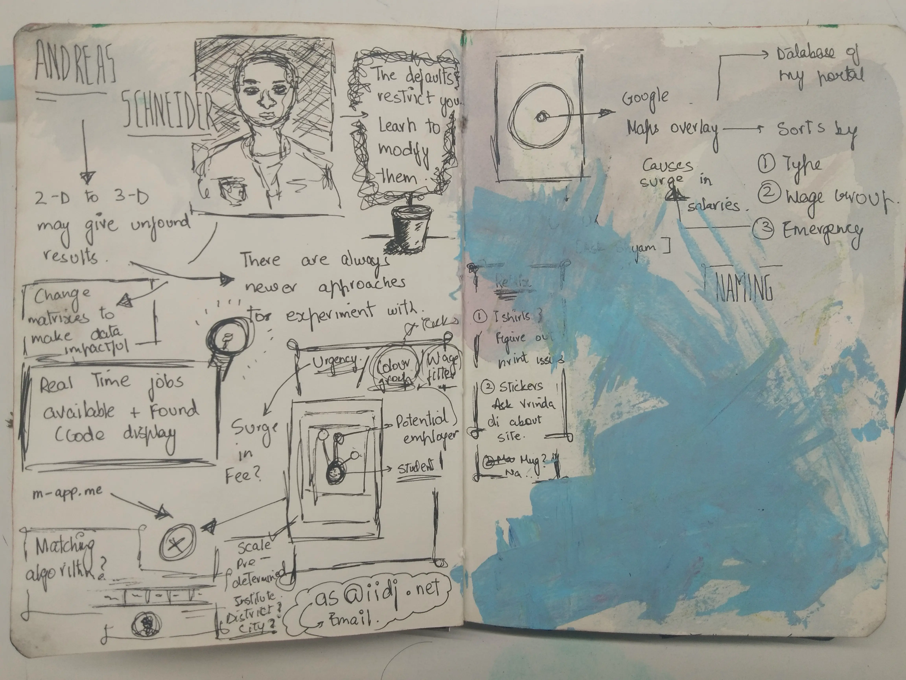
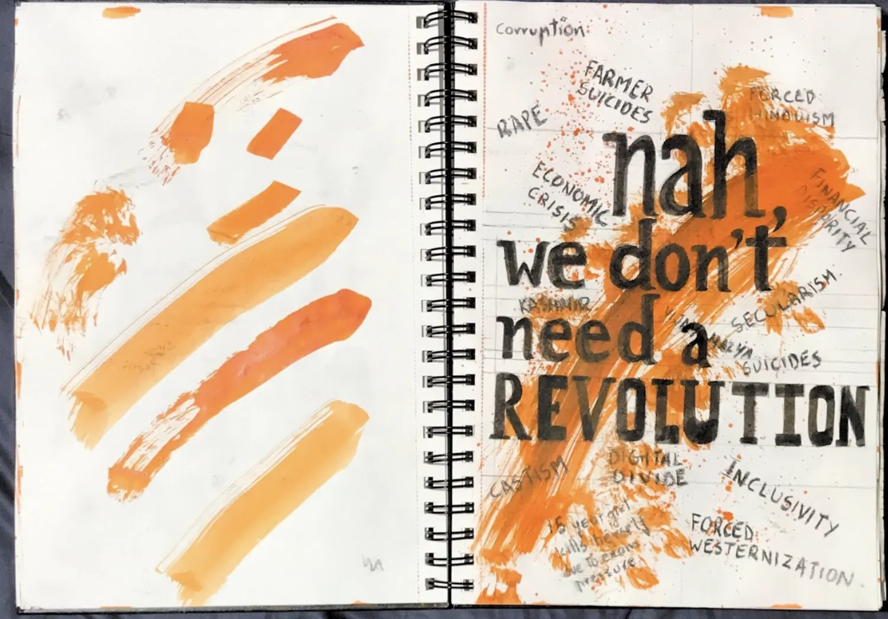
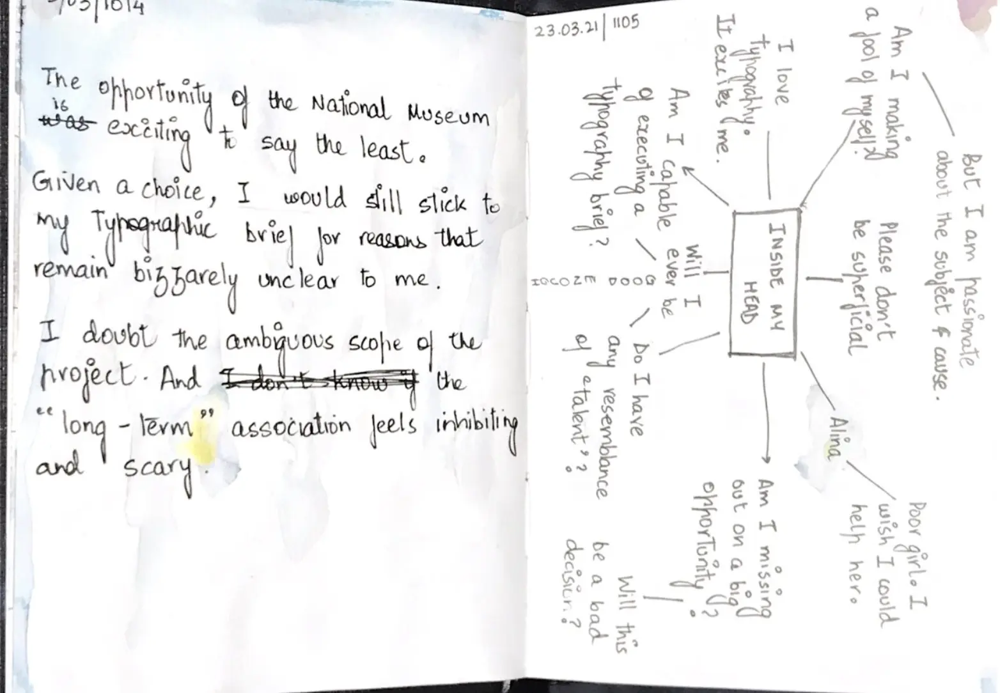
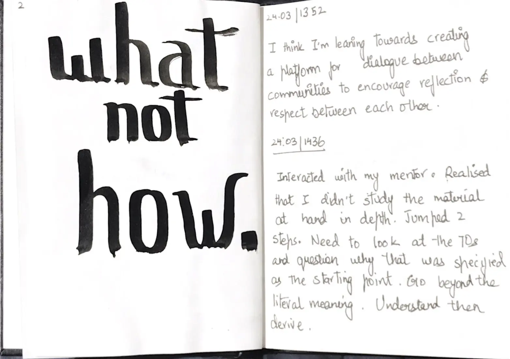
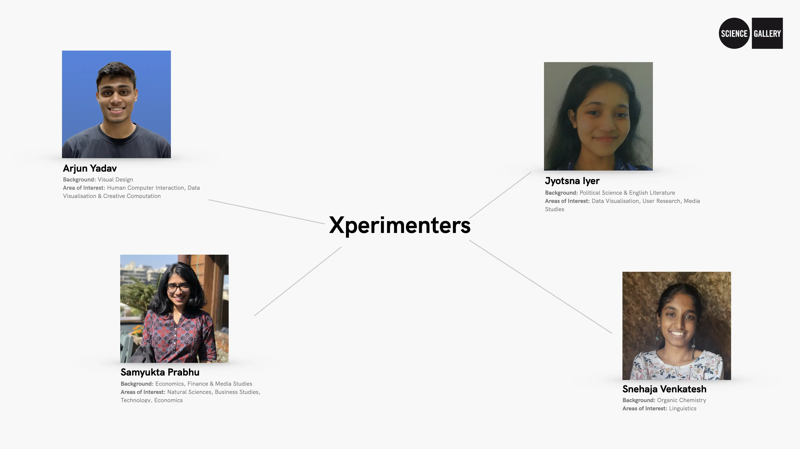

--- class: middle # .unbold.grey[on writing] --- class: middle left ## .grey[numbers & data ->] --- class: middle left # total # of things you've ever made<br>.unbold.grey[since you became a 'designer'.] <figcaption>make up a number, a formula, look at your hard-drive — whatever. share a number.</figcaption><br><br> --- class: middle left # total # of things that are presentable. <figcaption>in job-interviews, conferences, shows, your portfolio, et-cetera.</figcaption><br><br> --- class: middle left # responsibilities: <figcaption>the american english dictionary defines <em>responsibility</em> as a thing that one is <strong>required to do as part of a</strong> job, <strong>role</strong>, or legal obligation.</figcaption> --- class: middle left # we're similar; <br> you & i. --- class: middle center <figure> <video preload="yes" muted autoplay nocontrols loop height = "500"> <source src="../assets/media/common/showcase-loop_2.mp4" type="video/mp4" /> your browser does not support videos. </video> </figure> --- class: middle <a href = "https://arjunmakesthings.github.io/past-projects-map/page.html">stuff -></a> --- class: middle .grey[m.p.s. in interactive telecommunications @nyu] ## ITP’s mission is to explore the <strong>imaginative use</strong> of communications <strong>technologies</strong>.<br><br> ... (it) is sometimes described as an <strong>art school for engineers</strong> and at the same time <strong>an engineering school for artists</strong>. --- class: middle # abstract --------------> concrete --- class: middle center <img id = "center" src = "https://hke3r.hku.hk/images/ExpLearn-Model.png" width = "600px"> <figcaption>kolb's experiential cycle; <a href = "https://hke3r.hku.hk/ExpLearn.php?page=2">source</a>.</figcaption> --- class: middle # abstract <--------------> concrete --- class: middle left # .unbold.grey[why] .pink[writing]<br> .unbold.grey[is your] responsibility<br>.unbold.grey[as a] student-of-design<br> <div class="bottom right"> .grey.footnote[arjun at purdue-university; january 2026.] </div> --- class: middle center  --- class: middle ### reflective log: - what you did (task) - what went wrong (challenges) - what went well (successes) --- class: middle center  <figcaption>notes from a talk with andreas schneider; 2019.</figcaption> --- class: middle center <img src = "../assets/media/260114_purdue/good logo.webp" height = "500px"> <figcaption>notes from a talk about 'good' logos; 2019.</figcaption> --- class: middle center background-image: url("../assets/media/260114_purdue/takeaways.webp") --- class: middle center <img src = "https://arjunmakesthings.github.io/projects/2021_dear-delhi/O1.webp" height = "500px"> <figcaption>from <a href = "https://arjunmakesthings.github.io/projects/2021_dear-delhi/page.html" target = "_blank">dear delhi</a>; 2021.</figcaption> --- class: middle center <!-- map --> <img src = "https://arjunmakesthings.github.io/projects/2021_dear-delhi/1.webp" width = "900px"> <figcaption>from <a href = "https://arjunmakesthings.github.io/projects/2021_dear-delhi/page.html" target = "_blank">dear delhi</a>; 2021.</figcaption> --- class: middle center <img src = "https://arjunmakesthings.github.io/projects/2021_dear-delhi/3.0.webp" width = "900px"> <figcaption>from <a href = "https://arjunmakesthings.github.io/projects/2021_dear-delhi/page.html" target = "_blank">dear delhi</a>; 2021.</figcaption> --- class: middle center <img src = "https://arjunmakesthings.github.io/projects/2021_dear-delhi/O1.webp" height = "500px"> <figcaption>from <a href = "https://arjunmakesthings.github.io/projects/2021_dear-delhi/page.html" target = "_blank">dear delhi</a>; 2021.</figcaption> --- class: middle center <img src = "https://arjunmakesthings.github.io/projects/2021_dear-delhi/O4.webp" height = "500px"> <figcaption>from <a href = "https://arjunmakesthings.github.io/projects/2021_dear-delhi/page.html" target = "_blank">dear delhi</a>; 2021.</figcaption> --- class: middle center <img src = "https://arjunmakesthings.github.io/projects/2021_dear-delhi/O2.webp" height = "500px"> <figcaption>from <a href = "https://arjunmakesthings.github.io/projects/2021_dear-delhi/page.html" target = "_blank">dear delhi</a>; 2021.</figcaption> --- class: middle center <!-- last poster --> <img src = "https://arjunmakesthings.github.io/projects/2021_dear-delhi/O5.webp" height = "500px"> <figcaption>from <a href = "https://arjunmakesthings.github.io/projects/2021_dear-delhi/page.html" target = "_blank">dear delhi</a>; 2021.</figcaption> --- class: middle center  <figcaption>sketchbook from <a href = "https://arjunmakesthings.github.io/projects/2021_dear-delhi/page.html" target = "_blank">dear delhi</a>; 2021.</figcaption> --- class: middle center  <figcaption>page from my reflective-log for <a href = " https://arjunmakesthings.github.io/projects/2021_dear-delhi/O5.webp" target = "_blank">dear delhi</a>; 2021.</figcaption> --- class: middle center  <figcaption>page from my reflective-log for <a href = " https://arjunmakesthings.github.io/projects/2021_dear-delhi/O5.webp" target = "_blank">dear delhi</a>; 2021.</figcaption> --- class: middle center  <figcaption>xperimenters 2022 cohort, at science gallery bengaluru.</figcaption> --- class: middle center <img src = "https://arjunmakesthings.github.io/projects/2022_in-between-life-and-death/Hierarchy_ToLevels.webp" height = "500px"> <figcaption>from <a href = "https://arjunmakesthings.github.io/projects/2022_in-between-life-and-death/page.html">in between life & death</a>; 2022.</figcaption> --- class: middle center <figure> <video preload="yes" muted playsinline autoplay nocontrols loop height = "500"> <source src="https://arjunmakesthings.github.io/projects/2022_in-between-life-and-death/GamePromo.mp4" type="video/mp4" /> your browser does not support videos. </video> <figcaption>from <a href = "https://arjunmakesthings.github.io/projects/2022_in-between-life-and-death/page.html">in between life & death</a>; 2022.</figcaption> </figure> --- class: middle center <img src = "https://arjunmakesthings.github.io/projects/2022_in-between-life-and-death/GameEnd.webp" width = "900px"> <figcaption>from <a href = "https://arjunmakesthings.github.io/projects/2022_in-between-life-and-death/page.html">in between life & death</a>; 2022.</figcaption> --- class: middle center <img src = "https://arjunmakesthings.github.io/projects/2022_earth-2052/original_delete.webp" height = "500px"> <figcaption>from <a href = "https://arjunmakesthings.github.io/projects/2022_earth-2052/page.html">earth 2052: hot or not</a>; 2022.</figcaption> --- class: middle center <img src = "https://arjunmakesthings.github.io/projects/2022_earth-2052/8_e2052.webp" height = "500px"> <figcaption>from <a href = "https://arjunmakesthings.github.io/projects/2022_earth-2052/page.html">earth 2052: hot or not</a>; 2022.</figcaption> --- class: middle center <img src = "https://arjunmakesthings.github.io/projects/2022_earth-2052/3_e2052.webp" height = "500px"> <figcaption>from <a href = "https://arjunmakesthings.github.io/projects/2022_earth-2052/page.html">earth 2052: hot or not</a>; 2022.</figcaption> --- class: middle center <img src = "https://arjunmakesthings.github.io/projects/2022_earth-2052/10_e2052.webp" height = "500px"> <figcaption>from <a href = "https://arjunmakesthings.github.io/projects/2022_earth-2052/page.html">earth 2052: hot or not</a>; 2022.</figcaption> --- class: middle center <img src = "https://arjunmakesthings.github.io/projects/2022_earth-2052/15.webp" height = "500px"> <figcaption>from <a href = "https://arjunmakesthings.github.io/projects/2022_earth-2052/page.html">earth 2052: hot or not</a>; 2022.</figcaption> --- class: middle left ### <a href = "https://arjunsnotion.notion.site/Arjun-s-Thesis-4a732af0f22542128c1d80a64147557a">xperimenters blog -></a> --- class: middle center <img src = "https://substackcdn.com/image/fetch/$s_!klz2!,w_1456,c_limit,f_webp,q_auto:good,fl_progressive:steep/https%3A%2F%2Fbucketeer-e05bbc84-baa3-437e-9518-adb32be77984.s3.amazonaws.com%2Fpublic%2Fimages%2F4f7c431b-8983-41e3-ba1c-3127b44f2ef9_1280x576.jpeg " width = "900px"> <figcaption>fieldwork in bihar, india; 2022; fetched from <a href = "https://arjunsweeklyupdates.substack.com/archive">substack</a>.</figcaption> --- # zettelkasten: -- <img src = "https://upload.wikimedia.org/wikipedia/commons/3/33/Zettelkasten_%28514941699%29.jpg " height = "500px"> <figcaption>from the wikipedia page about <a href = "https://en.wikipedia.org/wiki/Zettelkasten">zettelkasten</a>.</figcaption> --- class: middle left ### digital-brain walkthrough -> --- class: middle left ### <a href = "https://arjunmakesthings.github.io/itp-blog/">itp blog</a> -> --- class: middle # in-progress .unbold.grey[documentation], end-progress .unbold.grey[documentation], <br>.unbold.grey[and] shareable .unbold.grey[version.] --- class: middle ### electrons: <a href = "https://arjunmakesthings.github.io/itp-blog/intro-to-physical-computing/midterm-log">in-progress</a>, <a href = "https://arjunmakesthings.github.io/itp-blog/intro-to-physical-computing/midterm-reflection">end-progress</a>, <a href = "https://arjunmakesthings.github.io/projects/2025_little-green-things/page.html">shareable</a>. --- ## install: - <a href = "https://obsidian.md/download">obsidian</a> - <a href = "https://desktop.github.com/download/">github desktop</a> (+ make an account on github) - <a href = "https://code.visualstudio.com/download">vs code</a> (or use a code editor of your choice) --- ## setup: - make a repo with <a href = "https://github.com/arjunmakesthings/quartz_for-purdue_260114">this</a> template or <a href = "https://quartz.jzhao.xyz">go the official way</a> with quartz. --- class: middle ### how it works ->